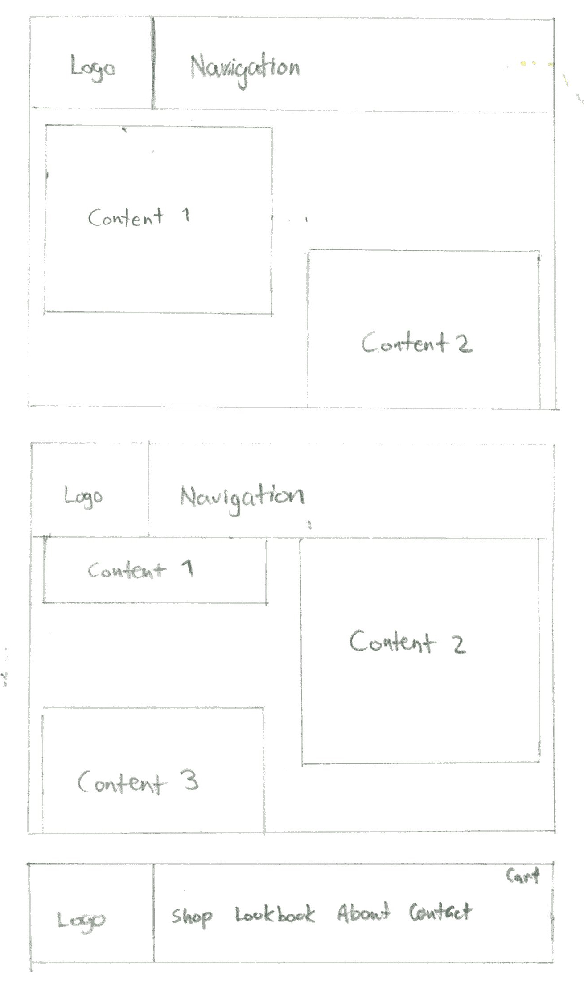
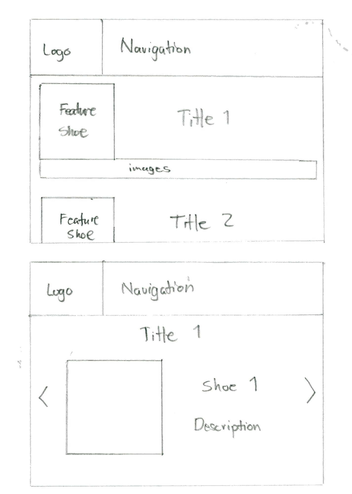
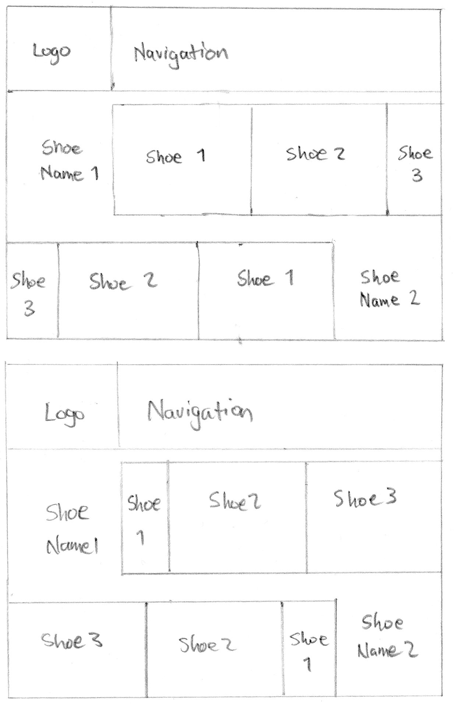
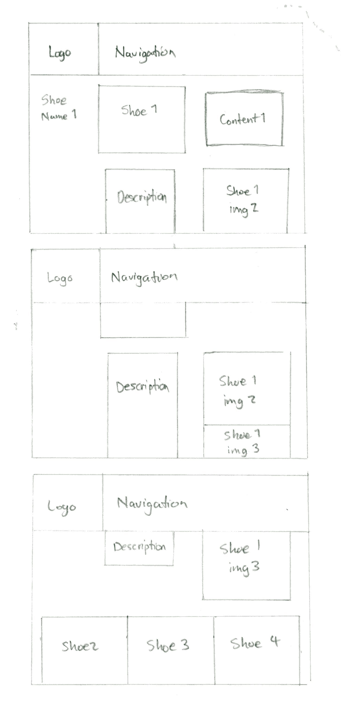
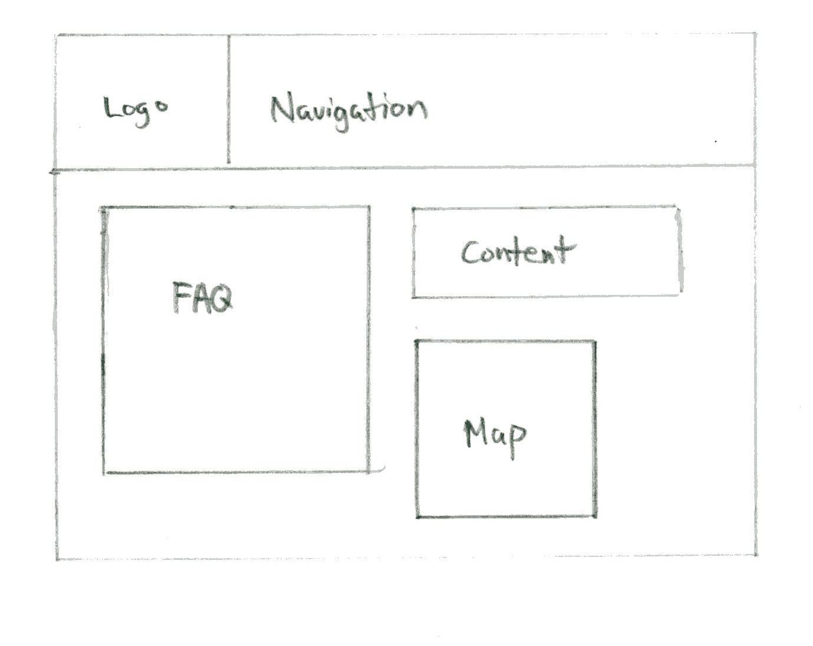

Combine comfort and casual style for the modern man
providing the fashion without the sacrifice of comfort.
Brand Component:
The logo of the company: Klide
This logo will be placed on the shoe to give it an identity. Instead of an icon, the word itself will be ecthed on the shoe or placed on the shoe. This kind of logo gives a mature feel
Tasks
User finds about who and what the company is
User browse the collections
User buys and adds to cart
User view detailed description and pictures of shoe
User finds the contact information
Task 1

Its the About page and the Navigation bar
The about page is inspired by how we create footsteps while people walk. Left and right the images overlap in alignment giving this sense of step by steps.
Task 2

The lookbook section of the website that showcase the a set of shoe collection from Klide.
Title is presented and provide a featured shoe with small images complimenting it.
Task 3

When shopping, user can view the shoe and see other colorways along with it.
Each model is presented in a line and a user can scroll sideway to pick which color they want for it.
Task 4

When user selects a shoe, they are able to purchase it and view its description.
User is presented a quick option to purchase it in the content1 box and when they scroll down, more pictures and description of the shoe is revealed.
Task 5

The contact page will have important communcat
ion details.
Contact has FAQ to give quick answers for the user. Content box will have phone contact and email. Shows a map to give visual on where the store may be located physically.